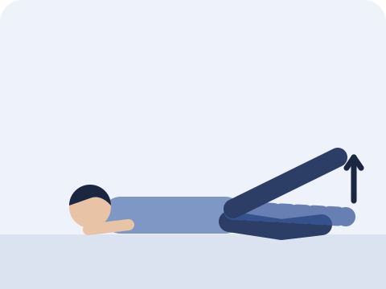
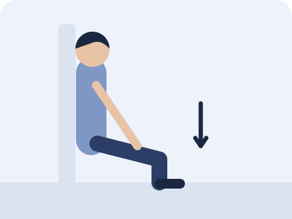
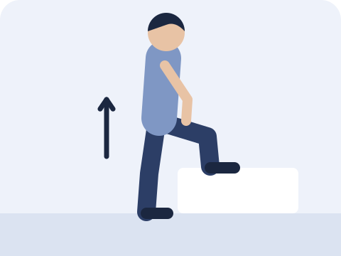

行完山落樓梯，或者跑完步，膝蓋骨前面隱隱作痛？這篇文章會講解常見原因，以及三個在家可以做的訓練。
簡單答案跑步或行山後膝蓋前方痛，常見原因之一是髕股痛（膝蓋骨周圍痛），通常在落樓梯、蹲下、久坐或跑步時加劇。指引建議以運動訓練為主，同時訓練髖部和膝部的肌肉，並暫時調整令痛楚加劇的活動量。如膝蓋明顯腫脹、卡住，或受傷後無法承重，請諮詢醫生或物理治療師。
甚麼是髕股痛？
髕股痛是指膝蓋骨後面或周圍的痛楚，是跑步和行山人士常見的膝痛之一。
痛楚通常在膝蓋承受較多負荷時出現，例如蹲下、上落樓梯、行山落斜、跳躍、跑步，或者坐得太久之後。症狀可以時好時壞，也可能反覆出現。
不一定要完全停止運動，而是調整份量。
指引建議以運動訓練為主，並暫時減少令痛楚明顯加劇的活動，例如落斜、落樓梯或長距離跑步，之後再逐步增加。
三個在家可做的訓練
指引建議同時訓練髖部和膝部的肌肉，而不只是訓練膝部。以下次數只是起步建議，可按自己情況調整。

側臥抬腿
側身躺下，下面的腳微微屈曲，上面的腳伸直，慢慢向上抬起，再慢慢放下。
10 次｜做 2–3 組

靠牆半蹲
背靠牆，雙腳向前站約一步，慢慢向下蹲至舒服的高度，停一會再站起來。
停 10 秒｜做 5 次

踏階
一隻腳踏上一級樓梯或穩固的矮凳，慢慢站直，再慢慢落返地面。膝蓋對準腳尖方向。
每邊 10 次｜做 2–3 組
做的時候要注意
- 以不痛或輕微不適為原則；如痛楚明顯加劇，或第二天更痛，請減少幅度或次數。
- 動作要慢，膝蓋對準腳尖方向。
- 重新跑步或行山時，先縮短距離，再逐步增加。
甚麼情況應先求醫？
- 膝蓋明顯腫脹，或發熱、發紅
- 膝蓋卡住，或經常「腳軟」
- 跌倒或扭傷後，無法正常行走或承重
- 痛楚持續數星期仍未改善
常見問題
膝痛可以繼續跑步或行山嗎？
很多時可以，但要調整份量，例如縮短距離、減少落斜，以痛楚不明顯加劇為原則。如不確定，請諮詢物理治療師。
為甚麼膝痛也要訓練髖部？
髖部肌肉有助控制大腿和膝蓋在跑步、落樓梯時的位置。指引建議同時訓練髖部和膝部，而不只是膝部。
需要照 X 光或磁力共振嗎？
髕股痛主要靠病歷和身體檢查判斷，不一定需要照片。如懷疑有其他問題，醫生會按情況安排。
參考資料
- Willy RW, et al. Patellofemoral pain: clinical practice guidelines. J Orthop Sports Phys Ther 2019;49(9):CPG1–CPG95. PubMed
- Crossley KM, et al. 2016 Patellofemoral pain consensus statement from the 4th International Patellofemoral Pain Research Retreat, Manchester. Part 2: recommended physical interventions. Br J Sports Med 2016;50(14):844–852. PubMed

高浩維 Anson Ko
註冊物理治療師，於尖沙咀 Amazing Medical 應診。關於我
本文只供一般參考，不能取代專業診斷及治療。如症狀持續或出現警號，請諮詢醫生或物理治療師。